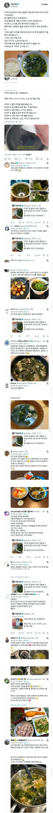

ミヨックク (미요꾸꾸)

ミヨックク (미요꾸꾸)
ㅅㅂ 국간장을안쓰고 소금을쓴다고???
원래 국간장은 색내는용이고 간은 소금으로 맞춤
국간장으로만 간을 하면 맛 이상해 ㅋㅋ
들깨는 생선이나 조개미역국 할때나 넣지 소고기엔 별로임
미역이 진짜 빡빡하지않고 흐믈흐믈해야 맛잇음.
미역국이 진짜 만들기도 쉽고 맛있음
내 주력 메뉴임
뭐 정성들여 볶는거도 맛있는데
걍 미역 물 간장 다시다만 넣어도 존맛임
미역줄기 빼고 미역국 만들면 개맛도리
ㄹㅇ 개추 ㅋㅋㅋㅋ
나 가끔 미역줄기가 목에 걸리는지 어렸을때는 헛구역질 날 때 있었는데
그래도 미역국은 맛있음
미여꾸꾸
기밀유출당했노
이제 저기서 점점 변형이 생기면서
미역 대신에 다른 해초류, 소고기 대신에 다른 고기로 바꾸고 'XX미요꾸꾸' 이라고 한다 이제
미여꾸꾸꾸
하긴 미역국은 일본 사람들도 좋아할 맛이긴 하지.
군데 몸 안의 모든 것이 나왔대 ㅋㅋㅋㅋ
미역이 섬유질이 많아서 변비에 도움이 되는 건 사실임.